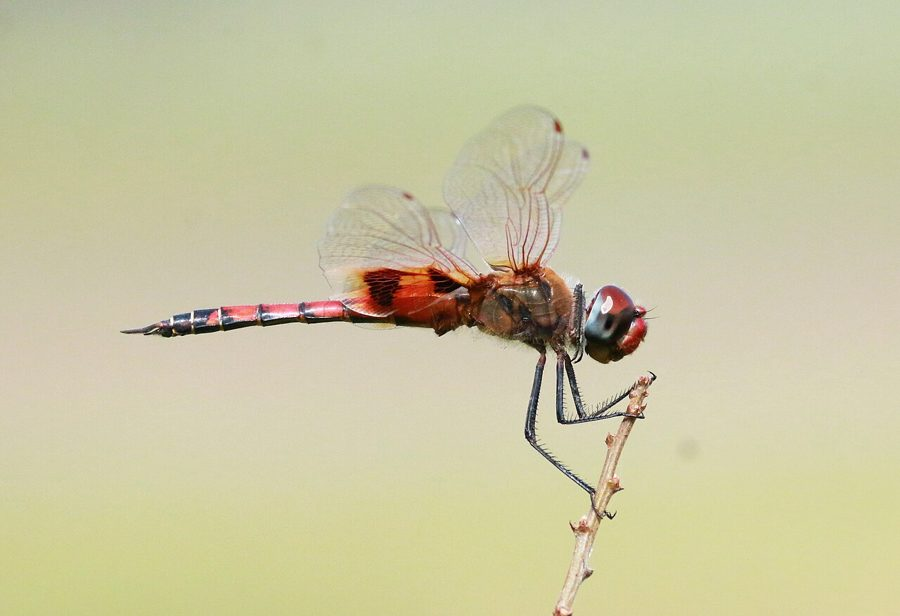

कीहोल ग्लाइडर व्याध पतंगKeyhole Glider
Tramea basilaris · Libellulidae · INS-0206

- Scientific name वैज्ञानिक नाम
- Tramea basilaris (Palisot de Beauvois, 1817)
- Family कुल
- Libellulidae
- Hindi हिंदी
- कीहोल ग्लाइडर व्याध पतंग
- Local names स्थानीय नाम
- keyhole glider, keyhole glider dragonfly, glider dragonfly, chhidra vyadh patang
- Status here यहाँ की स्थिति
- native
- Movement आवागमन
- Resident, here all year
- Known from कहाँ दर्ज
- Others have published records from the wider Awadh–Purvanchal plain, none yet from Basti–Ayodhya अवध–पूर्वांचल से दूसरों के प्रकाशित अभिलेख, बस्ती–अयोध्या से अभी नहीं
- IUCN IUCN
- not evaluated
- Review समीक्षा
- not yet reviewed
When to look कब देखें
Present all year. साल भर मौजूद।
Uses and possibilities उपयोग और संभावनाएँ
Drawn from the documented uses in the profile below, where each is labelled traditional, current or a research lead. All uses →
Tell it apart from इनसे अलग पहचानें
कीहोल ग्लाइडर व्याध पतंग / Keyhole Glider
Tramea basilaris (Palisot de Beauvois, 1817) — Libellulidae
कीहोल ग्लाइडर व्याध पतंग — खुले मैदानों, जलाशयों और धान के खेतों के ऊपर ऊँचाई पर उड़ने वाली एक बड़ी और अत्यंत शक्तिशाली व्याध पतंग (dragonfly) है। इसके पिछले पंखों के आधार पर ताले के छेद (कीहोल) जैसा अनोखा लाल-भूरा धब्बा होता है, जिसके बीच में एक पीली खिड़की जैसी जगह छूटी होती है। नर का पेट चमकीला लाल और पूँछ पर काला निशान होता है। यह घंटों बिना थके हवा में तैरती रहती है और उड़ते हुए कीड़ों का शिकार करती है।
Quick Identification त्वरित पहचान
| Feature | Description |
|---|---|
| Size | Large, robust dragonfly; abdomen 30–35 mm, hindwing 40–44 mm (Subramanian 2005) |
| Keyhole Marking | Reddish-brown basal patch on hindwing divided by a clear window, resembling a keyhole (Fraser 1936) |
| Male Abdomen | Bright brick-red to vermilion, marked with black dorsal spots on segments 8 to 10 (Subramanian 2005) |
| Thorax | Olivaceous-green to reddish-brown, clothed in fine golden hairs (Fraser 1936) |
| Compound Eyes | Dark reddish-brown above, fading to bluish-grey and pale yellow below (Subramanian 2005) |
| Female Colour | Golden-brown to yellowish-green with similar keyhole wing patches (Fraser 1936) |
| Flight Dynamics | Sustained gliding flight high in open air, rarely perching for long |
Field tip: Look high above open ponds, marshes, and agricultural fields on warm sunny afternoons. A large, red-tailed dragonfly that glides effortlessly for minutes on wide wings without flapping, displaying a dark keyhole-shaped silhouette at the base of each hindwing against the sky, is the Keyhole Glider.
हिंदी: खुले आसमान और तालाबों के ऊपर बिना पंख फड़फड़ाए तैरने वाली इस बड़ी लाल पतंग के पिछले पंखों पर ताले के छेद जैसा धब्बा साफ दिखाई देता है।
Morphology आकारिकी
Measurements as given in the handbooks (Subramanian 2005; Fraser 1936):
| Measurement | Range | Source |
|---|---|---|
| Abdomen length | 30–35 mm | Subramanian (2005) |
| Hindwing length | 40–44 mm | Subramanian (2005) |
Adult description:
Tramea basilaris is a large, aerodynamically built libellulid dragonfly displaying moderate sexual dichromatism (Fraser 1936). In mature males, the head has a bright red frons with violet metallic reflections at the base; the eyes are dark crimson-brown above and pale olivaceous below (Subramanian 2005). The synthorax is olivaceous-brown with a reddish suffusion on the dorsum, densely clothed in golden-brown pubescence, and lacks dark lateral stripes (Fraser 1936).
The male abdomen is stout, slightly depressed, and bright brick-red or vermilion: segments 1 through 7 are uniform red; segment 8 bears a broad black mid-dorsal triangle; segment 9 is mostly black with red lateral borders; and segment 10 is velvety black with long, slender, straight black anal appendages (Subramanian 2005).
The female is olivaceous-brown or golden-yellow, with the black dorsal markings on segments 8 through 10 more pronounced (Fraser 1936). In both sexes, the forewings are completely hyaline, but the hindwings are very broad at the base, bearing a large, reddish-brown or golden-brown basal patch enclosing a clear hyaline central fenestra—a diagnostic pattern that closely resembles an antique keyhole (Fraser 1936). The pterostigma is long, narrow, and bright yellowish-brown (Subramanian 2005).
Larval Stage निम्फ अवस्था
The aquatic naiad is large, smooth, and pale translucent green or straw-yellow, living among floating vegetation and submerged weed beds. The abdomen bears prominent lateral spines on segments 8 and 9, but completely lacks dorsal hooks, an adaptation for swimming among open macrophyte foliage.
हिंदी: नर का पेट 30 से 35 मिमी लंबा और सिंदूरी लाल होता है। पिछले पंख बहुत चौड़े होते हैं और उन पर कीहोल जैसा धब्बा होता है। मादा हल्के सुनहरे-भूरे रंग की होती है।
Behaviour & Ecology व्यवहार और पारिस्थितिकी
The Keyhole Glider is an accomplished aerial wanderer and seasonal migrant (Subramanian 2005). It inhabits expansive open landscapes, frequenting marshes, floodplains, temporary monsoon pools, and agricultural fields (Fraser 1936). It spends most of the daylight hours airborne, utilizing thermal updrafts to glide effortlessly at heights of two to ten metres above the ground.
Males patrol large aerial circuits over open water or field edges, defending transient feeding territories and intercepting swarms of flying insects (Subramanian 2005). When perching, they settle horizontally on the extreme tips of tall twigs, telephone wires, or emergent reed stalks, holding their wings horizontally or slightly depressed (Fraser 1936). Mating pairs fly in tandem wheel formation high in the air. Oviposition is exophytic: the female flies in swift dipping arcs over open water, accompanied by the hovering male in non-contact guarding, releasing eggs into weed-rich shallows.
हिंदी: यह पतंग बहुत कुशल तैराक की तरह हवा में उड़ती है और घंटों तक बिना थके चक्कर लगाती है। नर और मादा हवा में उड़ते हुए ही प्रजनन करते हैं और मादा पानी की सतह पर अंडे गिराती है।
Life Cycle / Phenology जीवन चक्र
Seasonal phenology in northern Indian alluvial wetlands across the agricultural year (Fraser 1936; Subramanian 2005):
| Season / Month | Stage | Field Observation |
|---|---|---|
| July–September (Kharif monsoon) | Adult peak & breeding | Mass emergence; large aggregations foraging over flooded fields (Subramanian 2005) |
| October–November (Post-monsoon) | High adult activity | Wandering flights over agricultural plains and canal networks |
| December–January (Rabi winter) | Naiad development | Aquatic nymphs develop in perennial tanks and oxbow waters |
| February–April (Spring / Zaid) | Adult emergence | Spring brood emerges, active along sunny river corridors (Fraser 1936) |
| May–June (Pre-monsoon summer) | Drought refuge | Disperses over wide agricultural tracts and deep reservoirs (Subramanian 2005) |
Females hover over shallow water and tap the surface rhythmically, releasing hundreds of small spherical eggs that sink to the bottom. The eggs hatch after a few days into predatory nymphs. Naiads grow rapidly through multiple instars over a few weeks, feeding actively on mosquito larvae and small aquatic insects. At maturity, the nymph climbs an emergent reed stalk at dawn to emerge as an adult dragonfly.
हिंदी: मादा पानी पर उड़ते हुए अंडे देती है। कुछ दिनों में अंडे फूटते हैं और पानी में रहने वाला निम्फ कुछ ही हफ्तों में तेजी से बड़ा होकर वयस्क पतंग बन जाता है।
Host Plants or Prey आहार
Tramea basilaris is an aerial apex predator of flying insects (Subramanian 2005):
Adult diet:
- Swarming wetland mosquitoes, including Culex quinquefasciatus (Southern House Mosquito) and Culex tritaeniorhynchus (Rice-field Mosquito).
- Flying agricultural pests, including Nilaparvata lugens (Brown Planthopper) and Nephotettix virescens (Green Leafhopper).
- Small winged termites, winged ants, flying beetles, and midges (Chironomidae) captured on the wing.
Larval diet:
- Mosquito wrigglers, midge larvae, mayfly nymphs, and small tadpoles in open water.
हिंदी: यह पतंग हवा में उड़ते हुए मच्छरों, धान के फुदकों और बारिश के बाद निकलने वाले दीमक के पतंगों का तेजी से शिकार करती है। इसका निम्फ पानी में मच्छरों के लार्वा को खाता है।
Predators / Natural Enemies शत्रु
Natural predators documented in Gangetic plain freshwater ecosystems:
- Birds: Large aerial insectivorous birds, such as black drongos, blue-tailed bee-eaters, and hobby falcons, chase and capture adult gliders in open airspace.
- Predatory dragonflies: Very large aeshnid dragonflies occasionally attack foraging libellulids.
- Spiders: Large wetland orb-weavers snare adults flying near shoreline reeds.
- Fish: Murrels and walking catfishes feed on developing naiads in open water bodies.
हिंदी: भुजंगा, नीलकंठ और बाज़ जैसे तेज शिकारी पक्षी हवा में इस बड़ी पतंग को पकड़ लेते हैं। पानी के अंदर बड़ी मछलियाँ इसके निम्फ को खाती हैं।
Agricultural / Human Relevance कृषि प्रासंगिकता
Natural agricultural pest regulation: The Keyhole Glider is an invaluable beneficial predator across rural farming tracts of northern India (Subramanian 2005). Because it hunts continuously in high-altitude swarms over rice paddies and pulse crops, it consumes massive numbers of airborne planthoppers (Nilaparvata lugens Brown Planthopper) and leafhoppers during mass seasonal dispersals.
Vector mosquito suppression: Adults forage heavily over rural settlements and cattle ponds at dusk, intercepting swarms of disease-transmitting culicine mosquitoes (Subramanian 2005).
Traditional: No traditional medicinal, economic, or cultural uses are recorded.
Today: Celebrated by naturalists and photographers as one of the most magnificent and agile gliding dragonflies in Asia.
Research direction (a lead, not a result): Investigating the migratory aerodynamic efficiency of the broad hindwing fenestration under variable wind tunnel velocities.
हिंदी: यह पतंग धान की फसलों को नुकसान पहुँचाने वाले फुदकों और बीमारी फैलाने वाले मच्छरों को बहुत बड़ी मात्रा में खाकर किसानों को बहुत लाभ पहुँचाती है।
Expected Locally स्थानीय रूप से अपेक्षित
Not a field record. Written from published accounts for eastern Uttar Pradesh. No confirmed local sighting yet — if you have seen it, that is what the atlas needs.
अभी तक स्थानीय पुष्टि नहीं। यह विवरण प्रकाशित स्रोतों से है, किसी अवलोकन से नहीं।
The Keyhole Glider is expected across eastern Uttar Pradesh gliding over open wetlands, flooded agricultural fields, and canal reservoirs. Look high in the open air above water bodies on warm, sunny afternoons from July through November. GBIF holds published records from the wider Awadh–Purvanchal plain, none yet from Basti–Ayodhya. A photograph showing the red abdomen and the keyhole-shaped basal wing patch, submitted through the About page, would confirm the first local documentation for the district.
Distribution वितरण
Global range: Widespread across the tropical Old World, occurring throughout sub-Saharan Africa, Madagascar, South Asia, and Southeast Asia to northern Australia (Fraser 1936).
In India: Recorded throughout peninsular India, the Western and Eastern Ghats, central India, and across the Gangetic plains to Assam and the Andaman Islands (Prasad & Varshney 1995; Mitra 2002).
In Uttar Pradesh: Recorded from wetland sanctuaries, oxbow lakes, and agricultural floodplains throughout central and eastern districts.
In Basti district / eastern UP: Expected as a widespread resident breeding dragonfly in rural wetlands, flooded paddy tracts, and canal corridors.
हिंदी: यह अफ्रीका से लेकर भारत और दक्षिण-पूर्व एशिया तक व्यापक रूप से पाई जाती है। उत्तर प्रदेश के सभी मैदानी इलाकों में यह आसानी से देखी जा सकती है।
Research Questions शोध प्रश्न
- How do seasonal monsoon wind trajectories correlate with the arrival of migratory Tramea basilaris swarms in eastern UP? / मानसून की हवाओं के साथ इस पतंग के झुंडों का क्या संबंध है?
- What is the daily predation rate of Tramea basilaris on airborne brown planthoppers during kharif crop harvest?
- How does the presence of high perching posts in open fields affect territorial holding times of resident males? / खेतों में ऊँचे डंडों से क्या इस पतंग के शिकार में आसानी होती है?
- What proportion of adult flight time is spent gliding versus active wing flapping under midday thermals?
- Can local farmers use dragonfly swarm abundance as an early warning indicator for planthopper pest dispersals?
Similar Species मिलती-जुलती प्रजातियाँ
| Species | How to tell apart | हिंदी | |
|---|---|---|---|
| Pantala flavescens ([[wandering_glider\ | Wandering Glider]]) | Body bright yellowish-orange; wings completely clear without dark keyhole basal patches | सुनहरी व्याधपतंग — बिना धब्बे वाले पीले पंख |
| Urothemis signata ([[scarlet_basker\ | Scarlet Basker]]) | Solid reddish-brown hindwing patch without clear central window; perches rigidly on reed tips | स्कारलेट बास्कर — बिना खिड़की वाला गहरा धब्बा |
| Rhyothemis variegata ([[common_picture_wing\ | Common Picture Wing]]) | Wings entirely variegated with fluttering golden-yellow and metallic blackish-green patches | कॉमन पिक्चर विंग — तितली जैसे रंगीन पंख |
Field rule: A large red dragonfly gliding effortlessly high over water with broad hindwings carrying a distinctive dark reddish-brown basal patch enclosing a clear keyhole-like window is the Keyhole Glider.
हिंदी: सुनहरी व्याधपतंग के पंखों पर कोई धब्बा नहीं होता और स्कारलेट बास्कर का धब्बा पूरा भरा होता है, जबकि कीहोल ग्लाइडर के धब्बे के बीच में ताले के छेद जैसी खिड़की होती है।
Taxonomy & Classification वर्गीकरण
Original description. Described by Ambroise Marie François Joseph Palisot de Beauvois in 1817 as Libellula basilaris in Insectes recueillis en Afrique et en Amérique..., page 171, plate 3, figure 1. Type locality: "Royaume d'Oware" (Nigeria, Africa).
Subspecies. Multiple subspecies are recognized across its extensive Old World range. The population inhabiting the Indian subcontinent and Southeast Asia has historically been designated Tramea basilaris burmeisteri Kirby, 1889.
Family and order placement. Order Odonata, suborder Anisoptera, family Libellulidae. The genus Tramea Hagen, 1861, comprises the gliders or saddlebags, renowned for their long-distance migration and broad hindwing bases.
Phylogenetic notes. Tramea is closely allied to Pantala within the subfamily Pantaliinae, defined by specialised wing aerodynamics, expanded anal loops, and migratory life histories (Subramanian 2005).
IUCN status rationale. Not evaluated (NE) on the global IUCN Red List of Threatened Species. It is an abundant, secure, and highly vagile species across the tropical regions of Africa and Asia.
हिंदी: इसका वैज्ञानिक नाम Tramea basilaris है और यह Libellulidae परिवार की सदस्य है। प्रकृति में इसका वास पूरी तरह सुरक्षित है।
Photo Gallery फोटो गैलरी
No photos yet — add field photos to media/species/keyhole_glider/ and run node scripts/sync_photos.js.
Photos needed आवश्यक फोटो
- [ ] Adult male gliding in flight showing keyhole wing patches (हवा में उड़ते हुए पंखों का कीहोल धब्बा)
- [ ] Adult male perched horizontally on twig tip (लकड़ी के सिरे पर बैठा लाल नर)
- [ ] Adult female showing golden-yellow ground and wing markings (मादा की शारीरिक बनावट)
- [ ] Tandem mating pair in flight over pond (तालाब के ऊपर उड़ती जोड़ी)
References संदर्भ
- Palisot de Beauvois, A. M. F. J. (1817). Insectes recueillis en Afrique et en Amérique, dans les royaumes d'Oware et de Benin, à Saint-Domingue et dans les États-Unis, pendant les années 1786–1797. Fain et Compagnie, Paris, p. 171, pl. 3, fig. 1.
- Fraser, F. C. (1936). The Fauna of British India, Including Ceylon and Burma. Odonata, Vol. 3. Taylor and Francis, London, pp. 432–435.
- Subramanian, K. A. (2005). Dragonflies and Damselflies of Peninsular India — A Field Guide. E-book of Project Lifescape, Centre for Ecological Sciences, Indian Institute of Science and Indian Academy of Sciences, Bangalore, p. 114.
- Prasad, M. & Varshney, R. K. (1995). A check-list of the Odonata of India including data on larval studies. Oriental Insects, 29(1): 385–428.
- Mitra, T. R. (2002). Geographical distribution of Odonata (Insecta) of Eastern India. Memoirs of the Zoological Survey of India, 19(1): 1–208.
- GBIF Occurrence Data — Tramea basilaris, India (2025).
Source file: species/fauna/insects/keyhole_glider.md